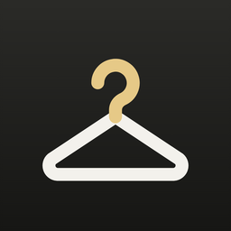

e-MyCloset
服を撮って、切り抜いて、コーデを楽しむ
e-MyCloset は、服の写真を撮るだけで背景を切り抜いて、クローゼットの管理・コーデの作成・毎日の着用記録ができるアプリです。登録したデータはすべて端末の中に保存します。
よくある質問
登録したデータはどこに保存されますか？
すべてお使いの端末の中に保存されます。運営者のサーバーには送られません。そのため、アプリを削除するとデータも消えます。
機種変更のとき、データを引き継げますか？
前の端末で「その他 → バックアップを作成」を行い、ファイルを iCloud Drive・Google ドライブ・メールなどに保存してください。新しい端末で「その他 → バックアップから復元」を選び、そのファイルを選ぶと引き継げます（iPhone と Android の間でも使えます）。
プレミアムプランを解約するには？
ストアのアカウントの設定から解約できます。期間が終わる24時間前までに解約すると、次の更新の料金はかかりません。アプリを削除しても解約にはなりません。
- iPhone：設定アプリ → 自分の名前 → サブスクリプション
- Android：Google Play ストア → プロフィールのアイコン → お支払いと定期購入 → 定期購入
機種変更・再インストールのあと、プレミアムプランに戻すには？
購入したときと同じ Apple ID または Google アカウントでログインしたうえで、「その他 → 購入の復元」を選んでください。
服がうまく切り抜けません
無地の壁や床の上に服を置き、服全体が写るように撮ると、きれいに切り抜けます。切り抜く範囲を枠で囲んでから始めると、精度が上がります。切り抜いたあとも、消しゴムと復元で手直しできます。
朝のお知らせが届きません
端末の設定で、e-MyCloset の通知が許可されているか確かめてください。省電力の設定によっては、通知が遅れることがあります。
服をグループに分けたい（タグ）
服の登録・編集の画面の「タグ」で、「仕事用」「休日」などのタグを作って付けられます。クローゼットの上に並ぶタグを押すと、そのタグの服だけを表示します。タグの名前の変更や削除は「その他 → 設定 → タグの管理」でできます。
服の価格や「1回あたりの金額」はどこで見られますか？
服の編集で価格を入れると、アイテムの詳細に「着用1回あたりの金額」が表示されます。「その他 → 着回し分析」では、クローゼットの合計金額も見られます。通貨は「その他 → 設定 → 通貨」で変えられます。
広告を消すには？
プレミアムプランにすると、すべての画面の広告が消えます。
お問い合わせ
ご質問・不具合のご報告は、メールでお送りください。お使いの端末の機種と OS のバージョン、アプリのバージョン（「その他」の一番下に表示）を書き添えていただけると、調査がスムーズです。
運営者：Nomasa Yusuke
メール：yn3916.kmdi@gmail.com